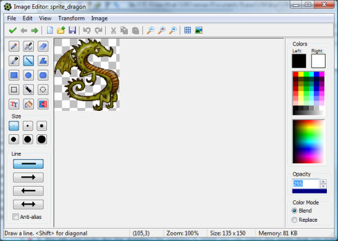

Editing individual images
Game Maker has a built-in image editor that can be used to edit
individual subimages of sprites and background images. To call the editor
for a subimage of a sprite, select the subimage in the sprite editor
and choose Edit Image from the Image menu (or double click on it).
To edit a background, open the background properties for and press the button
Edit Background.
The built-in image editor is pretty powerful and especially suited for creating
sprites and backgrounds for Game Maker. However, it does not have all
the features of full-blown paint and drawing packages. The buitl-in editor
is primarily meant for making changes to images, not for creating sprites and
backgrounds from scratch. For this you probably want to use a separate paint
program, save the images as PNG files, and load them into Game Maker.
You can also set an external image editor in the preferences.
When you start the image editor it will typically looks as follows:

The form shows the image in the middle and a number of drawing tools at
the left. Below there you can set certain properties of the drawing tools.
These will change depending on the tool you select (see below). In the middle
you see the current image. You can zoom in and out using the buttons on the
toolbar. At the right there is information about the colors with which the draw.
You can set a separate color for the left and the right mouse button. You can change
these by clicking with the left or right mouse button in the color selector images.
Also you can change them by clicking in the boxes at the top that repesent the colors.
Below the colors you see the Opacity. This indicates how opaque or transparent the color is.
When you set it to 255 the pixels your draw are fully opaque. When you set it to 0
they are fully transparent. Normally when you draw partially transparent pixels they
are blended with the current color. By setting the Color Mode to Replace, the pixels
will be replaced with the new color. Finally at the bottom of the form there is a
statusbar with some infomation about the current drawing tool, the position of the mouse,
the size of the image, and the amount of memory it requires.
Drawing tools
The following drawing tools are available (from left to right, top to bottom).
- Paint.
With this tool you can paint on the image. You can use the left or right mouse
button to paint in the different colors. You can select the size of the pen.
When holding <Shift> when starting to paint you only paint horizontal or
vertical lines. When holding the <Ctrl> key you can select a new paint color.
- Spray.
With this tool you can spray on the image. Spray is like paint except that you use a
brush that is partially transparent at the sides. You can use the left or right mouse
button to paint in the different colors. You can select the size of the brush. You can
also select the hardness of the brush. A soft brush will be more transparent near the sides.
When holding <Shift> when starting to spray you only paint horizontal or
vertical lines. When holding the <Ctrl> key you can select a new spray color.
- Erase.
With this tool you can erase part the image. It looks a lot like spray but you erase
what is below the mouse. How much you erase depends on the the Opacity. For a value of
255 you erase completely. For a smaller value you only make the image a bit more
transparent. You can set the hardness of the eraser.
When holding <Shift> when starting to spray you only paint horizontal or
vertical lines.
- Color Picker.
With this tool you can set the left or right mouse color to the color of a pixel in the
image. Note that also the opacity value is set.
- Line.
With this tool you can can draw straight lines.
When holding <Shift> you can draw horizontal, vertical, or diagonal lines.
You can set the width of the line and whether is should have arrows. By selecting Anti-alias
the line is drawn with partially transparent pixels on the side to make it more smooth.
- Polygon.
With this tool you can can draw a closed polygon. You click on the position of the first vertex.
Next you can either drag the next vertex or click on the position of the next vertex. In this way
you continue. You end the polygon with the <Esc> key.
When holding <Shift> you can draw horizontal, vertical, or diagonal lines.
You can set the width of the line and whether the polygon should be filled or not.
By selecting Anti-alias
the polygon is drawn with partially transparent pixels on the side to make it more smooth.
- Rectangle.
With this tool you can can draw a rectangle.
When holding <Shift> you can draw a square.
When holding <Ctrl> you draw the rectangle from the center.
You can set the width of the line and whether the rectangle should be filled or not.
By selecting Anti-alias
the rectangle is drawn with partially transparent pixels on the side to make it more smooth.
- Ellipse.
With this tool you can can draw an ellipse.
When holding <Shift> you can draw a circle.
When holding <Ctrl> you draw the ellipse from the center.
You can set the width of the line and whether the ellipse should be filled or not.
By selecting Anti-alias
the ellipse is drawn with partially transparent pixels on the side to make it more smooth.
- Rounded Rectangle.
With this tool you can can draw a rounded rectangle.
When holding <Shift> you can draw a square.
When holding <Ctrl> you draw the rounded rectangle from the center.
You can set the width of the line and whether the rounded rectangle should be filled or not.
By selecting Anti-alias
the rounded rectangle is drawn with partially transparent pixels on the side to make it more smooth.
- Select Region.
With this tool you can can select a rectangular region. You can extend the current selection by
holding the <Shift> key. Also you can remove parts by holding the <Ctrl> key.
Once you made a selection you can pick it up with the mouse and drag it to a new position. When you
use the right mouse button you make a copy. The selection can also be cut or copied to the
clipboard. It can be deleted with the <Del> key. You can end the selection using the
<Esc> key.
- Select with Magic Wand.
In this case you make the selection by clicking on a pixel. All connected pixels with the same
color will be selected. You can indicate the tolerance in color valu with which to select pixels
and whether only the color or also the transparency value should match. You can extend the current selection by
holding the <Shift> key. Also you can remove parts by holding the <Ctrl> key. You can
manipulate the selection as above.
- Select by Spraying.
In this case you make the selection by spraying with the mouse on the image. You can set the size
of the selector. For the rest the selection can be treated as above. Different selection types
can be combined.
- Text.
To add a text click on the image. A pop-up window appears in which you
can enter the text. Use the # symbol to insert a newline. Once you press
OK the text is put in the image, with a box around it. You can now move
the text by pressing with the mouse in the box and dragging the text. You can change
the text by clicking with the right mouse button in the box. You can set the Font of the text
and how the different lines should be alligned.
- Fill.
Click on a pixel in the image and all connected pixels with the same color will be turned
into the new pixel. You can set the tolerance with which the color should match. Also you can
set whether to only match on the color value or also take the transparency value into account.
Not that when the Color Mode is set to Blend the fill color is blended with the existing one. To
replace it, set the Color Mode to Replace.
- Change Color.
Click on a pixel in the image and all pixels in the image with the same color will be turned
into the new pixel. You can set the tolerance with which the color should match. Also you can
set whether to only match on the color value or also take the transparency value into account.
Not that when the Color Mode is set to Blend the new color is blended with the existing one. To
replace it, set the Color Mode to Replace.
Menus
A number of further commands is available through the menus. For some of these there is a corresponding
button on the tool bar.
File menu
- New.
Creates a new, empty image. You must indicate the size of the image. (When the image is part of
a sprite with multiple images you cannot set the size.)
(Remember, all images in a sprite must have the same size.)
- Open.
Open an image from a file. This menu item is not available when the image is part of
a sprite with multiple images.
- Previous Image.
Only available when the image is part of
a sprite with multiple images. Saves the changes and opens the previous subimage.
- Next Image.
Only available when the image is part of
a sprite with multiple images. Saves the changes and opens the next subimage.
- Save as PNG File.
Saves the image as a PNG file. No other file formats are supported.
- Close Saving Changes.
Closes the form, saving the changes made to the image. If you don't
want to save the changes, click on the close button of the form.
Edit menu
Here you find the usual commands to Undo the last change and Redo the last undo, to delete, cut, or
copy the current selection to the clipboard, to paste the image on the clipboard as a selection
in the image, and to select all. (Note that when using the clipboard, transparency information might
be lost.) Two additional commands require a bit more explanation.
- Erase to Left Color.
This erases the image and replaces it by the left color (and opacity setting).
- Paste from File.
You can select an image from a file. This image is then pasted into the current image
as a selection. You can then move that selection to the appropriate place.
View menu
- Zoom Out.
You can zoom out to see more of the image. You can also hold the <Ctrl> key
and move the mouse scroll wheel to zoom in or out.
- No Zoom.
Sets the image back to the normal size.
- Zoom In.
You can zoom in to more precisely draw in an area of the image.
- Toggle Grid.
You can toggle the grid on or off. Note that the grid is only shown when you
zoom in enough.
- Grid Options.
Here you can set the size of the grid and the color. You can indicate whether to use exclusive
or when drawing the grid (might make it more visible) and whether the drawing should be snapped
to the grid.
- Show Preview.
Show a preview of the image in the right bottom corner in the normal size. This is in particular
useful when you are zooming in a lot to make small changes. If the image is larger than the preview
are you can use the mouse to drag the part of the image you want to see. You can also double click
on the preview image to open a separate preview window in which you can see the complete image.
- Set Tranparency Background.
Here you can indicate how the transparent area of the image should be shown in the
sprite editor. You can either use the (default) block pattern, or a color that you can change
by clicking on the color box.
Transform menu
This menu contains the same transformation commands as in the sprite editor. You can read about
their function there. Note that Resize Canvas, Stretch, and Crop are not
available when the image is part of a sprite with multiple images, because in that case we
cannot change the size of the image.
Image menu
This menu contains the same commands as in the sprite editor. You can read about
their function there. Note that some commands are only available in the Pro Edition.